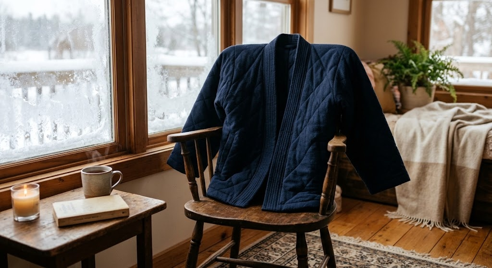

A quilted hanten jacket in kimono-inspired styling - the padded, open-front coat Japanese households have layered over everyday clothes for warmth without bulk since the Edo period.

Quilted padding traps heat without restricting movement.
Open-front, kimono-style cut goes over everyday clothes.
Based on a style worn indoors and out for generations.
Built for the kind of warmth a kotatsu or cold room calls for.
Hanten are quilted, kimono-style jackets that became common Japanese winter wear starting in the Edo period, worn by everyone from laborers to households gathered around a kotatsu.
The open-front, wide-sleeve cut makes it easy to throw on over whatever you're already wearing, which is part of why it's stayed a practical layer rather than just a historical costume piece.
Throw it on over pajamas or loungewear.
Warmth without restricting arm movement.
A genuinely different style of winter layer.
Check the current listing for the full size range.
It works well as an indoor layer and light outdoor coat over other layers.
Check the current listing for washing instructions.
A quilted kimono-style hanten winter jacket - see current pricing and availability on Amazon.
Check Price on Amazon →